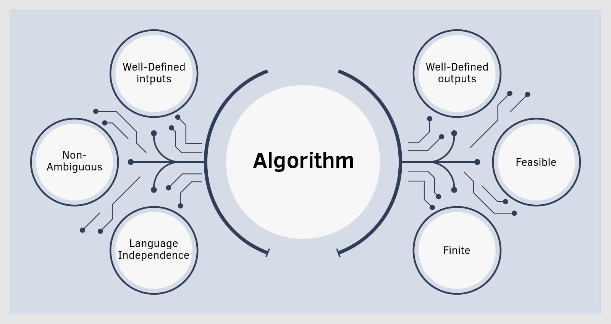

Algorithm
Algorithms are structured, step-by-step procedures essential for solving computational tasks effectively.
They form the backbone of computer science, enabling efficient problem-solving and solution design.
Mastery of algorithms is crucial for mastering data structures and effectively tackling complex computational challenges.
Sorting
Sorting is a fundamental operation in computer science and data processing. It involves arranging data elements in a specific order, typically ascending or descending based on a certain key or attribute. Efficient sorting algorithms are crucial for optimizing search algorithms, data retrieval, and overall system performance.
- Common sorting algorithms include:
- Selection Sort: Iteratively selects the smallest (or largest) element from the unsorted portion and places it in its correct position.
- Insertion Sort: Builds the sorted array one item at a time by inserting each new element into its correct position relative to the already sorted elements.
- Bubble Sort: Repeatedly steps through the list, compares adjacent elements, and swaps them if they are in the wrong order.
- Merge Sort: Divides the array into two halves, recursively sorts each half, and then merges the sorted halves to produce a fully sorted array.
- Quick Sort: Chooses a pivot element and partitions the array around the pivot, recursively sorting each partition.
Each sorting algorithm has its strengths and weaknesses in terms of time complexity, space complexity, stability, and adaptability to different data distributions. Choosing the right sorting algorithm depends on the specific requirements of the application and the characteristics of the data being sorted.
Big O Notation
Big O Notation is a mathematical notation used to describe the asymptotic behavior of an algorithm's time or space complexity as the size of the input grows. It provides an upper bound on the worst-case scenario of how the algorithm will perform. Big O Notation is crucial for analyzing the scalability and efficiency of algorithms.
- In Big O Notation:
- O(1) represents constant time complexity, where the algorithm takes the same amount of time regardless of input size.
- O(log n) denotes logarithmic complexity, typical of algorithms that divide the problem into smaller subproblems.
- O(n) signifies linear complexity, where the time or space grows linearly with the size of the input.
- O(n^2) indicates quadratic complexity, common in algorithms with nested loops over the input data.
- O(2^n) represents exponential complexity, where the growth doubles with each additional input element.
Understanding and analyzing algorithms using Big O Notation helps in predicting how algorithms will perform with larger datasets and in optimizing algorithm selection for different problem domains.
Example
Understanding practical examples of algorithms helps grasp their applications better. Here’s an example of sorting a list of numbers using a sorting algorithm.
Unsorted List
Consider the following unsorted list of numbers:
[34, 7, 23, 32, 5, 62]Sorted List
After applying a sorting algorithm, the list becomes:
[5, 7, 23, 32, 34, 62]